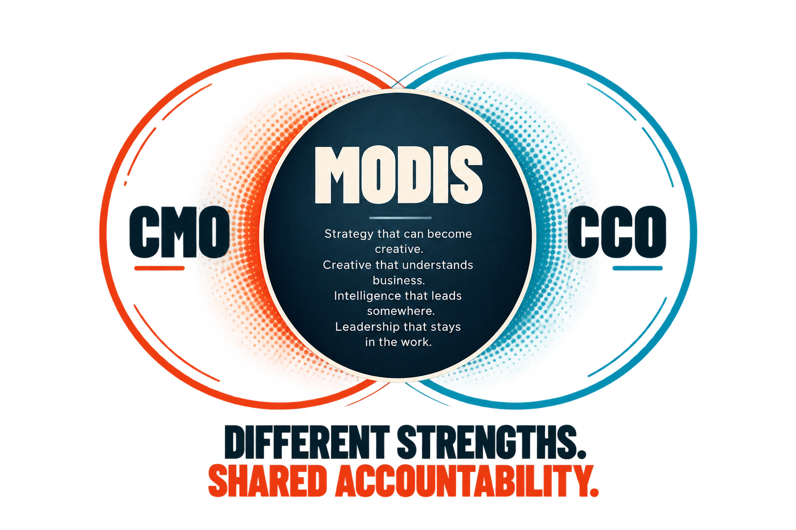
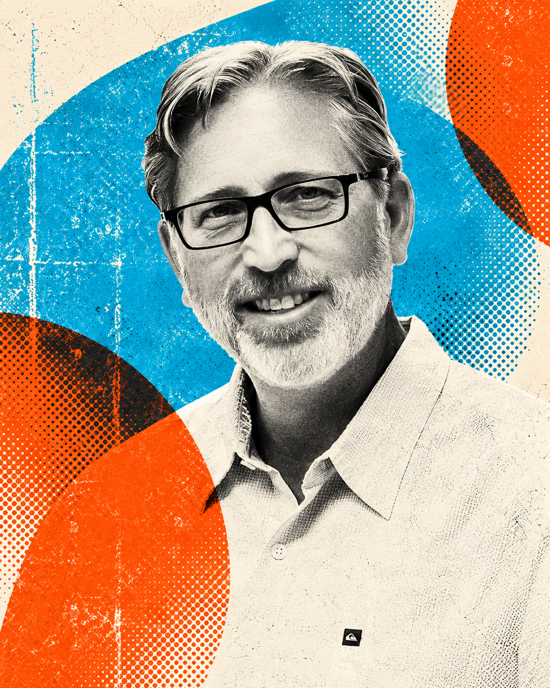
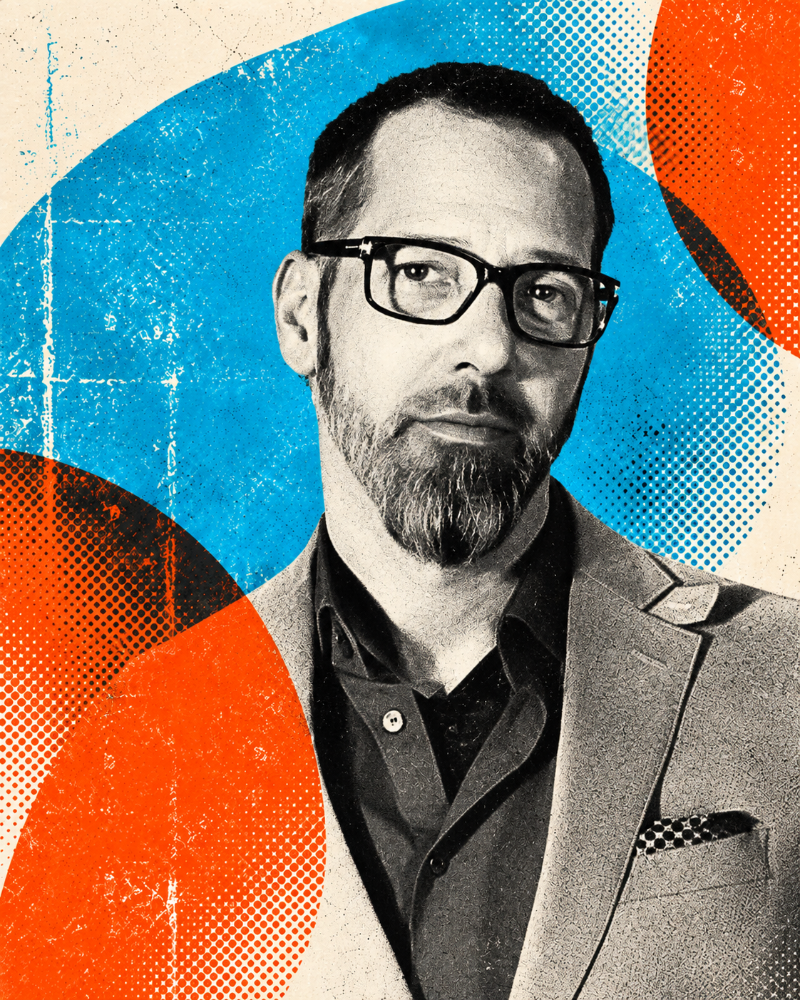

ANDY ASKS:
“What is the business trying to accomplish?”
WHO WE ARE
One sees the system. One shapes the story. Both know the work has to work.
MODIS was built around a simple idea: senior marketing and creative leadership work better when they operate as one connected discipline. Andy and Chris bring different experiences, instincts and strengths to the table, but share one standard for the work.
SEE HOW THE FRACTIONS FIT →THE CMO FRACTION
Strategy · Business · Analytics · Operations · Growth
Andy has spent more than two decades working across strategy, research, analytics, budgeting, media, operations and brand leadership. That range lets him step into a complex organization, understand how the pieces connect and focus people and resources around the opportunities that matter.
A fractional CMO who sees marketing as a business system, not a collection of channels.

THE CCO FRACTION
Brand · Creative · Communications · Transformation · Making
Chris has spent his career at the intersection of business strategy and creative execution. He can define the brand, shape the message and lead the work, but also understands the workflows, technology and organizational realities required to get it made.
Websites. CMS systems. Workflows. Video. Writing. Brand platforms. He does not just direct the work. He can make it.
A fractional CCO who understands the machinery behind the idea.
THE EXPERIENCE IS THE ADVANTAGE
Global brands. Destination marketing. Hospitality. Government. Consumer products. Organizations with big ambitions and organizations with complicated realities.


Different industries sharpen the same skill: knowing how to walk into something complex and quickly understand what matters.
THE GOOD PART IS WE DON'T THINK ALIKE.
ANDY ASKS:
“What is the business trying to accomplish?”
CHRIS ASKS:
“What does someone need to believe, feel or do?”
ANDY LOOKS FOR:
The system, the signal, the opportunity.
CHRIS LOOKS FOR:
The idea, the connection, the expression.
ANDY IS LIKELY TO PULL APART:
The business model.
CHRIS IS LIKELY TO PULL APART:
The brief.
BOTH EVENTUALLY ASK:
“Is this actually going to work?”
WHY FRACTIONAL WORKS
The role flexes. The standard does not.
Andy can step in as fractional CMO. Chris can step in as fractional CCO or brand and marketing transformation leader. You get the experience and objectivity of senior leadership without building the full-time structure around it.
Often the real value comes from having both perspectives connected from the beginning. Business and brand. Strategy and creative. Direction and execution.
Research. Analytics. Media. Technology. Production. Specialized creative. When the challenge needs more, we bring it in. When it does not, you do not carry it.
The fractions can change. The accountability stays whole.
THE PEOPLE IN THE WORK

THE STRATEGIC ENGINEER
Founder · Strategic Engineer
Fractional Chief Marketing Officer
Andy Windham brings more than two decades of senior marketing, strategy and business leadership to MODIS. His career began with Walt Disney Attractions, where he helped shape multi-year campaigns for Walt Disney World. Since then, his work has included Pinehurst Resort & Country Club, Biltmore Estate, the Tennessee Department of Tourist Development, Asheville and destinations throughout the Southeast.
Across corporate and agency leadership roles, Andy has worked across research, positioning, analytics, media, budgeting, operations and execution. That range gives him an unusual ability to see marketing as a connected business system rather than a collection of channels.
At MODIS, he brings that perspective directly into client organizations as a fractional CMO and strategic partner, helping leadership teams determine what matters, where the opportunity lives and how to turn it into measurable action.
LINKEDIN ↗THE COMMUNICATIONS ARCHITECT
Founder · Communications Architect
Fractional Chief Creative Officer
Christopher Just has spent more than two decades connecting business strategy, brand and creative execution for global companies, destinations, hospitality brands, nonprofits and complex organizations.
His experience spans tourism organizations in Maryland, Virginia and Louisiana, destinations including Colonial Williamsburg, Gettysburg and The National WWII Museum and brands including Coca-Cola, John Deere, Campbell's, Choice Hotels and Marriott. His work has crossed brand strategy, integrated communications, creative leadership, organizational transformation and audience engagement.
Chris brings an unusually hands-on perspective to creative leadership. Beyond directing teams, he builds. Websites, workflows, CMS platforms, video, content and communications systems are all part of how he works. That makes him equally comfortable discussing the business problem, reshaping how a marketing organization operates or sitting down and making the thing himself.
At MODIS, he serves as a fractional CCO and brand and marketing transformation leader, helping organizations connect sharper thinking to stronger creative and better execution.
LINKEDIN ↗
WHAT YOU WON'T GET
A 97-slide strategy deck nobody knows what to do with.
A creative presentation that wins the room and dies the next morning.
Layers of junior people translating what the senior people supposedly meant.
ENOUGH ABOUT US.
Bring us the problem everyone keeps talking around.
START A CONVERSATION →